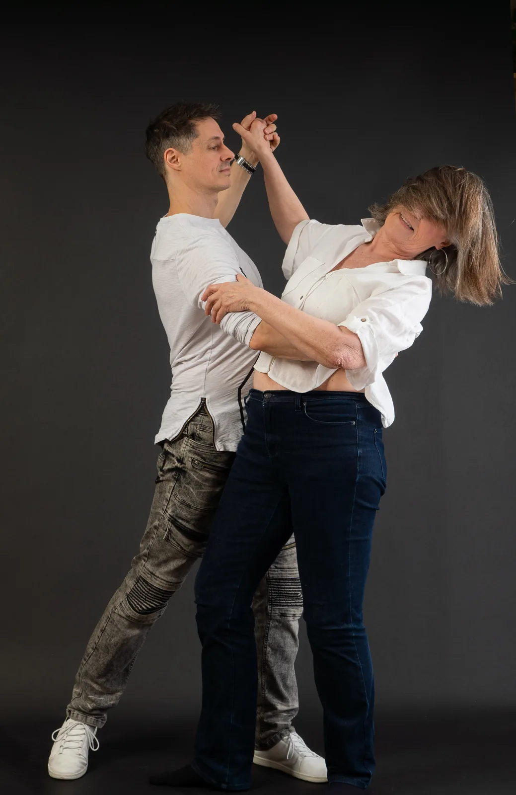
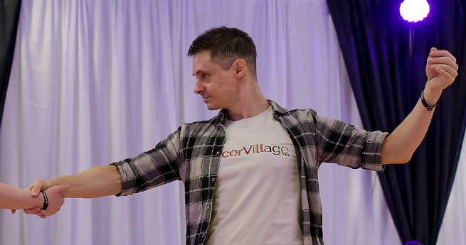
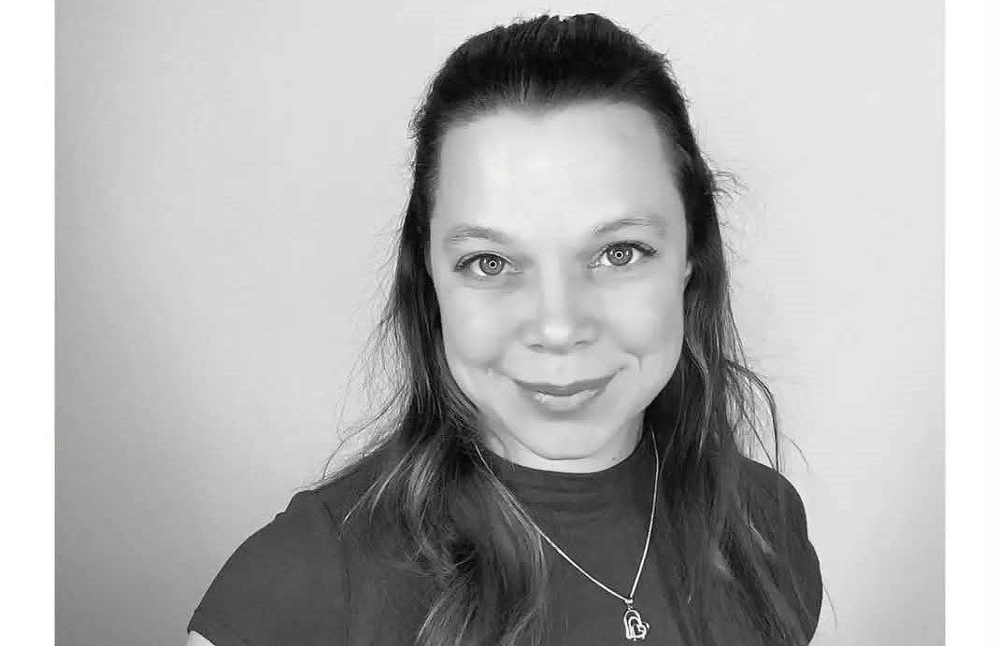
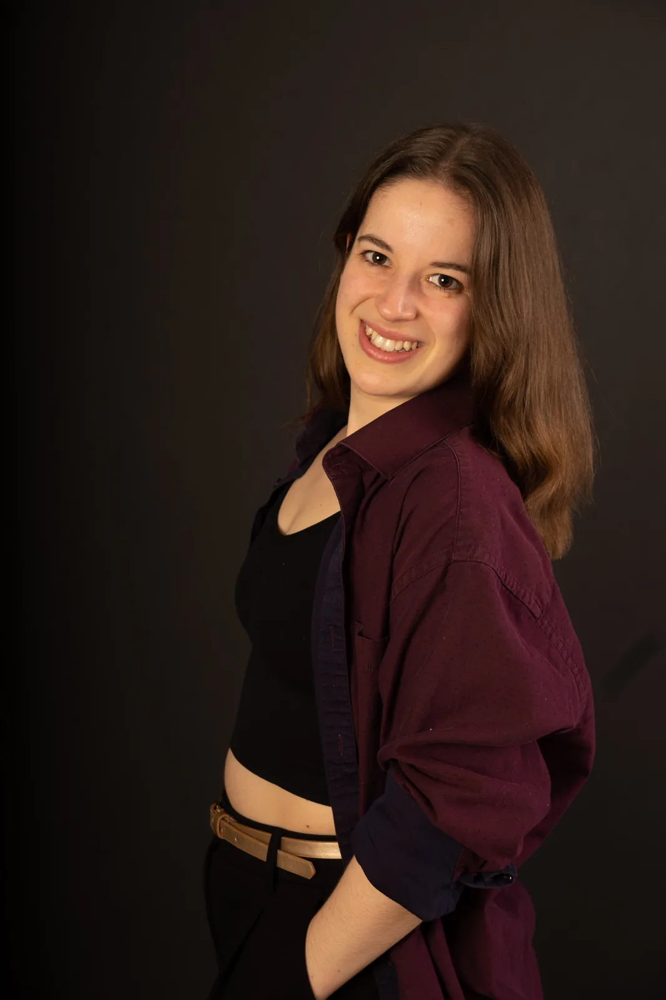

À propos
Notre école, nos professeurs et notre philosophie.
Notre engagement
Une approche personnalisée.
Chez Pulsation Danse, nous préparons chacun de nos cours avec soin. Nous prenons en considération les besoins de chacun de nos élèves. Notre engagement, c'est de te permettre de continuer à progresser même si tu refais un niveau plusieurs fois. Nous ne suivons pas un plan de cours préétabli, nous adaptons le contenu de chaque cours aux élèves inscrits. D'une session à l'autre, tu apprendras de nouveaux mouvements, différentes techniques et tout le nécessaire pour te permettre de continuer à évoluer à ton rythme.

Nos professeurs
Trois enseignants passionnés.
Gaétan Grondin

Mélanie Jean

Loïse Désaulniers

Et ensuite?